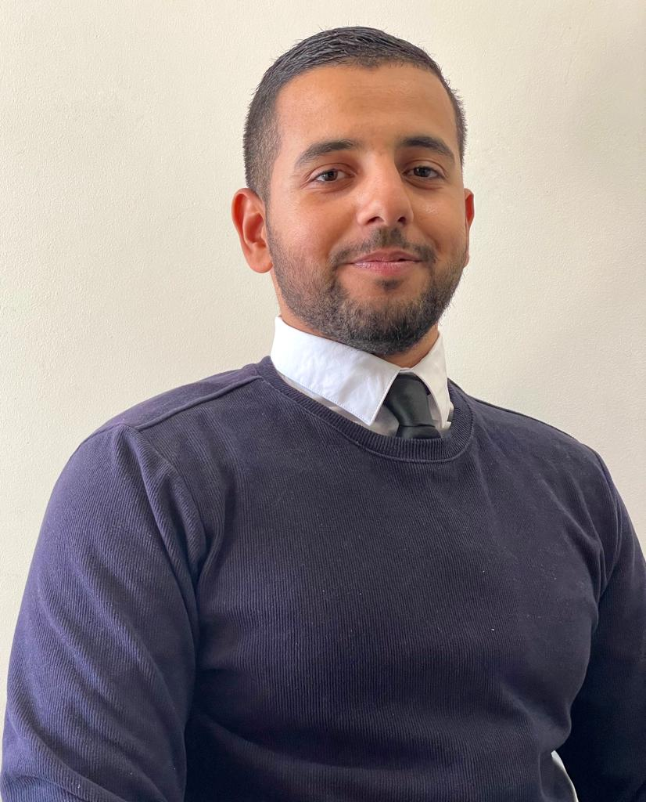

Étudiant en Master 1 Numérique: Enjeux et technologies
Etant inscrit en première année de Master Numérique: Enjeux et Technologies à l'université Paris 8 Vincennes. Je suis à la recherche d'un stage de 6 mois dans le domaine du numérique notammant: Product Owner, Scrum Master, Product Manager, chef de projet digital, Analyste Qa (Testeur), Web Designer, UX/UI Designer, Développeur web...etc. Ce stage me permettra de mettre en pratique mes connaissances que je suis entrain d'acquérir à l'université. Je suis à la recherche d'une entreprise qui me permettra de développer mes compétences et de contribuer à sa croissance.
Actuellement, je m'entraine à créer des sites dynamiques pour apprendre plus sur les ces deux langages: HTML (langage de balisage), CSS (langage de feuille de style), et j'ai commencé à apprendre sur ces deux langages de programmation: Java et JavaScript. De plus, je suis une personne curieuse, autodidacte et persévérante qui cherche toujours à apprendre tous les jours pour évoluer professionnellement. Durant mes expériences professionnelles, j'ai développé plusieurs compétences notamment: être à l'écoute, la capacité à communiquer efficacement et à établir une relation de confiance.Grâce à l'application Bubble, un langage de programmation visuel, j'ai pu concevoir diverses applications, dont deux projets phares. Le premier projet consiste en la création d'une carte interactive regroupant les restaurants préférés de mon groupe d'amis. Cette application se présente sous la forme d'une carte Google Maps, offrant à chaque membre la possibilité d'ajouter ses restaurants favoris. L'originalité réside dans le fait que les favoris de chacun sont visibles pour l'ensemble du groupe sur la carte, favorisant ainsi le partage et la découverte de nouveaux lieux culinaires.
De plus, j'ai développé une application inspirée de Tinder, mais pour les amateurs de chatons. Cette application propose aux utilisateurs de parcourir une série de photos adorables de chatons, une à une, leur permettant ainsi d'exprimer leur préférence en likant ou en passant à la photo suivante, à la manière du populaire Tinder. Les utilisateurs ont également la possibilité d'enrichir l'application en ajoutant leur propre chaton, en renseignant des informations telles que le nom de l'animal, sa date de naissance et une photo. Les autres utilisateurs peuvent ensuite voter pour leur chaton favori.
En approfondissant ma compréhension de la méthodologie agile, y compris l'application de sprints, la gestion de tâches "to do" et "done", j'ai rapidement vu l'opportunité de transférer ces compétences dans le cadre de ma recherche sur la "sobriété numérique". En collaborant étroitement avec mon binôme, on a mis en place cette approche méthodologique pour dynamiser notre projet. Cette transition nous a permis d'accroître notre efficacité en mettant en œuvre des itérations rapides, tout en facilitant l'adaptation à l'évolution constante de notre domaine d'étude.
Cette approche agile a enrichi notre recherche en intégrant nos retours et en ajustant notre méthodologie de manière itérative. Ce processus itératif nous a permis d'affiner notre compréhension des enjeux cruciaux de la sobriété numérique et de maximiser la valeur de notre travail de recherche.
Mon parcours de formation en conception de sites web dynamiques est une illustration de ma détermination à acquérir de nouvelles compétences. J'ai consacré une partie significative de mon temps à explorer les rouages essentiels de la création web, en m'immergeant dans deux piliers fondamentaux : le langage HTML (HyperText Markup Language) pour la structure et le langage CSS (Cascading Style Sheets) pour l'esthétique.
Simultanément, j'ai entrepris l'apprentissage de deux langages de programmation incontournables, à savoir Java et JavaScript, ouvrant ainsi des perspectives supplémentaires pour la création de sites interactifs et dynamiques.
Pour mettre ces compétences en pratique, j'ai récemment conçu mon propre portfolio en ligne, un projet de grande envergure où l'intégration harmonieuse de HTML, CSS, Java et JavaScript s'est révélée cruciale. Ce portfolio est le résultat de mon engagement à tirer parti de mes compétences acquises sur le site W3Schools, une ressource pédagogique précieuse. Mon cheminement d'apprentissage reste dynamique, et je m'efforce continuellement de perfectionner mes compétences dans le domaine de la conception web et du développement, tout en explorant de nouveaux horizons passionnants.Mon apprentissage du design a débuté avec l'exploration de Figma, une plateforme de conception en ligne. J'ai choisi de me concentrer sur la création d'interfaces simples et basiques, ce qui m'a permis de développer une compréhension plus approfondie des principes de conception d'interfaces.
Grâce à une pratique régulière, j'ai progressivement acquis de l'aisance dans l'utilisation des outils et fonctionnalités de Figma. Mon engagement à maîtriser cet outil de conception démontre ma volonté constante d'amélioration dans le domaine du design, une motivation qui continue à me pousser à explorer de nouvelles opportunités et à affiner ma créativité.
N'hésitez pas à me contacter à mon adresse mail tighidetayoub98@outlook.fr